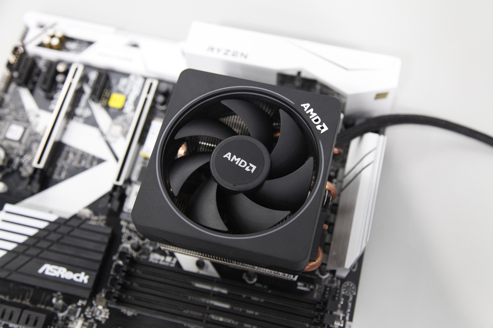

Refrigeración: Controlando la Temperatura
Módulo educativo para la infraestructura del computador de desarrollo

¿Qué es?
Es el conjunto de elementos mecánicos y térmicos diseñados para extraer y disipar el calor generado por los semiconductores del equipo (especialmente CPU y GPU) durante su funcionamiento intensivo.
Función Principal
Mantener las temperaturas de trabajo del procesador dentro de límites seguros (por debajo de 75-80°C). Esto evita el fenómeno conocido como Thermal Throttling (estrangulamiento térmico), donde la CPU reduce automáticamente su velocidad para evitar quemarse.
Importancia para la Programación
Procesos como la compilación de grandes bases de código o el entrenamiento de modelos de Machine Learning hacen trabajar al procesador al 100% durante minutos u horas. Un enfriamiento eficiente asegura que la CPU opere a su máxima frecuencia Boost constantemente.
Recomendación para Estudiantes ADSO
Un disipador por aire tipo torre de buena calidad ($25 - $40 USD) es más que suficiente para procesadores de gama media (Ryzen 5 / Core i5). No es indispensable invertir en sistemas líquidos costosos a menos que se haga overclocking o cargas extremas.
¿Sabías que...?
La pasta térmica aplicada entre el procesador y el disipador no es un enfriador por sí misma; su función es llenar las microscópicas imperfecciones de aire entre ambas metales para optimizar la conducción del calor.